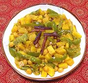

|
Winter Squash with ChickpeasIndia - Bengal - Kumro Chokka | ||||
| Serves: Effort: Sched: DoAhead: |
4 main *** 1-1/4 hrs Yes |
Delicious and satisfying as a vegetarian main dish served with steamed Basmati rice, this recipe's spicing is mild enough so it can also serve as a side dish for Western cuisine. I'm usually not a big squash fan, but I find this recipe excellent. | |||
|
1-1/3 2/3 12 5 1 2 1 1/2 1 2 1 2 ------ 1-1/2 2 2 2 3 ------ |
# c oz oz t t t c t T T T --- T in --- |
Winter Squash (1) Chickpeas, cooked (2) Bell Pepper, green (3) Onion, red Turmeric Salt Sugar Yogurt Garam Masala (4) Oil Spice Paste (5) Lemon Juice (6) -- Tadka Ghee (7) Bay Leaves Green Cardamoms Cloves Cinnamon stick (8) ---------- |
Do Ahead - (9-1/2 hrs - 10 min work)
|
imv_sqgarbo1 bfsc137 140730 - www.clovegarden.com
©Andrew Grygus - agryg@aaxnet.com - Linking to and
non-commercial use of this page is permitted.